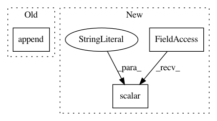

86ce5d52134a56806112ff8664e4034338e0e05a,yarll/agents/ppo/ppo.py,PPO,learn,#PPO#,208
Before Change
batch_rs = np.array(rs)[batch_indices]
fetches = [self.train_op]
if (n_updates % 1000) == 0:
fetches.append(self.model_summary_op)
feed_dict = {
self.states: batch_states,
self.old_network.states: batch_states,
self.actions_taken: batch_actions,
After Change
batch_actions,
batch_advs,
batch_rs)
tf.summary.scalar("model/loss", train_loss, step=n_updates)
tf.summary.scalar("model/actor_loss", train_actor_loss, step=n_updates)
tf.summary.scalar("model/critic_loss", train_critic_loss, step=n_updates)
n_updates += 1
In pattern: SUPERPATTERN
Frequency: 3
Non-data size: 3
Instances
Project Name: arnomoonens/yarll
Commit Name: 86ce5d52134a56806112ff8664e4034338e0e05a
Time: 2019-03-21
Author: arno.moonens@gmail.com
File Name: yarll/agents/ppo/ppo.py
Class Name: PPO
Method Name: learn
Project Name: reinforceio/tensorforce
Commit Name: ff9bc6dc375d0979ee4c596e740c7aa651a4b430
Time: 2018-07-27
Author: alexkuhnle@t-online.de
File Name: tensorforce/models/memory_model.py
Class Name: MemoryModel
Method Name: tf_loss
Project Name: reinforceio/tensorforce
Commit Name: ff9bc6dc375d0979ee4c596e740c7aa651a4b430
Time: 2018-07-27
Author: alexkuhnle@t-online.de
File Name: tensorforce/models/distribution_model.py
Class Name: DistributionModel
Method Name: tf_regularization_losses